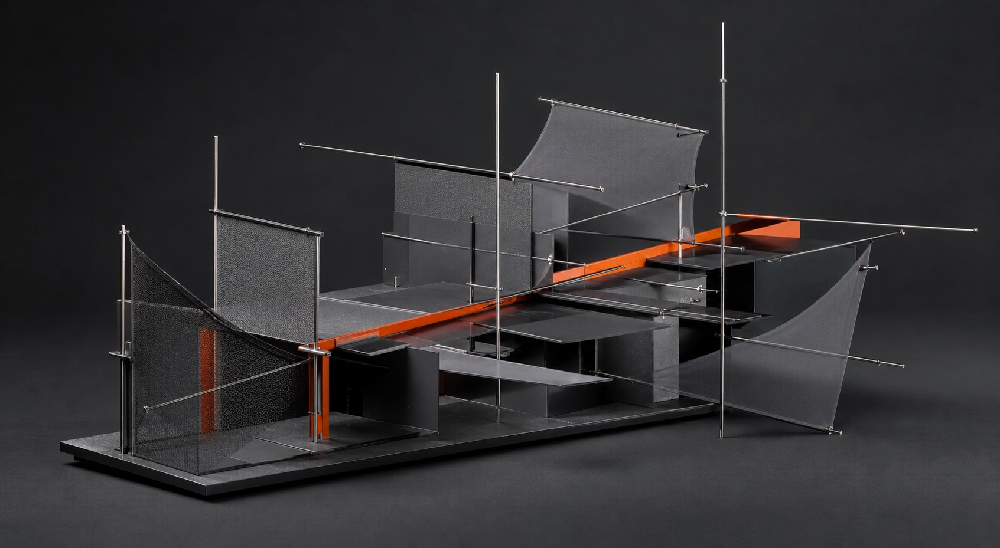
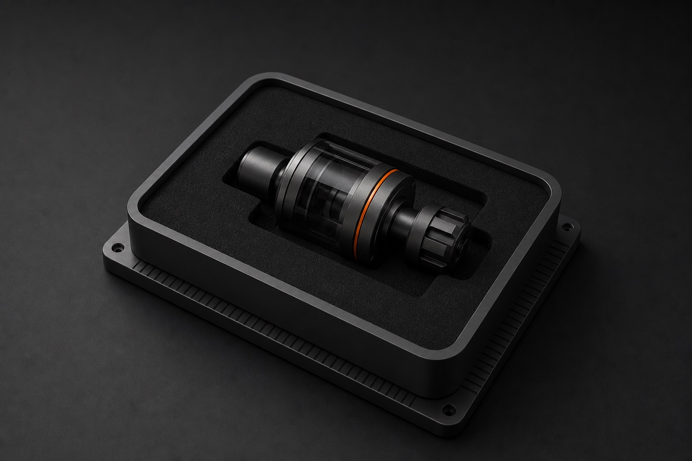

Interactive creative-direction instrument
Shape. Then build.
Turn creative decisions into a live 3D world and a clear handoff recipe.
Open the instrumentDirection turns intent into force.
Translate the brief into three forces. Every adjustment changes the object and the final recipe in real time.

Structure gives the idea somewhere to live.
Choose how the system holds together. The geometry reorganizes without losing the direction you already set.

Build makes behavior tangible.
Pick the surface, set the energy, then handle the object directly. Material and motion should support the same idea.
Drag the form to inspect it. Focus the canvas and use arrow keys for precise rotation.
Delivery proves it holds up.
Review the complete system, take a still, and copy the decisions into a practical handoff.

Your field recipe
Ready to hand off
- Direction
- Tension 58, tempo 36, depth 72
- Structure
- Orbit topology
- Build
- Graphite surface, energy 44
- Delivery
- Responsive canvas, static fallback, reduced-motion mode